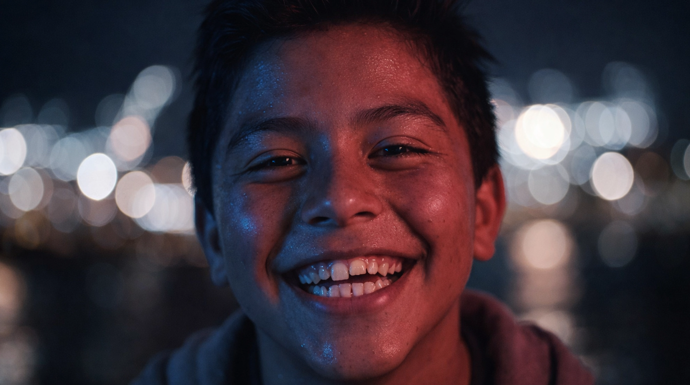
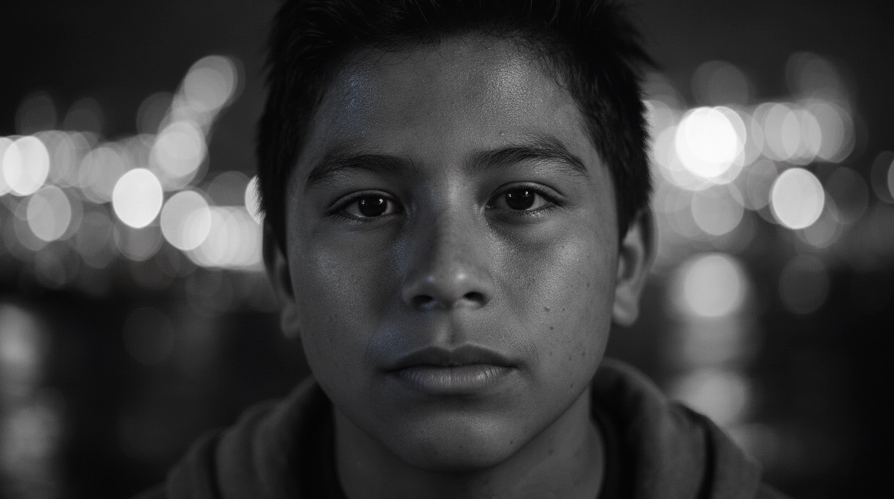
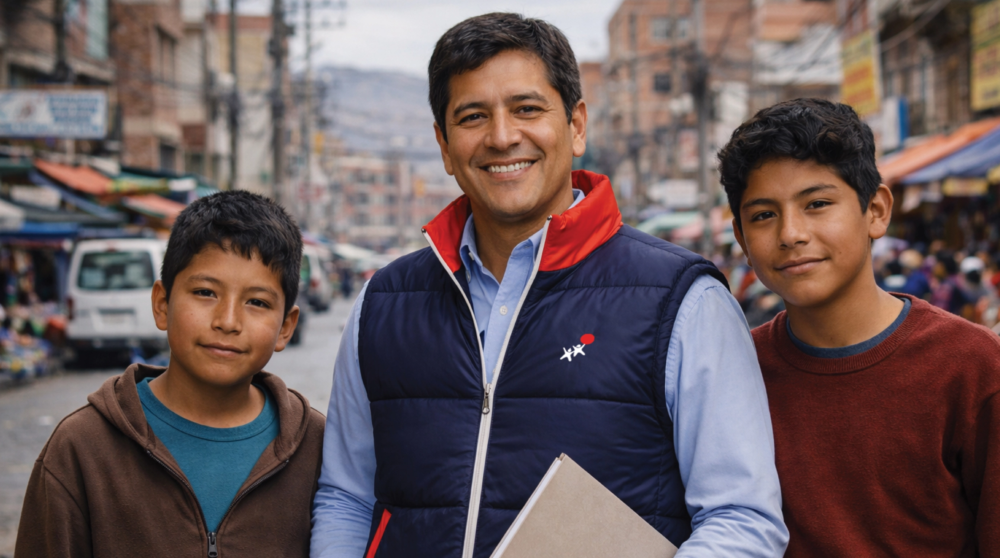
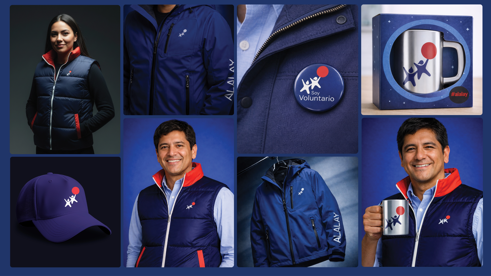

35 años de impacto. La marca debe probarlo.
Coherence · Recognition · Trust
ALALAY es una organización sin fines de lucro con más de 30 años de experiencia apoyando a niños y adolescentes en situaciones de alto riesgo social en La Paz, Bolivia.
A pesar de su fuerte impacto, la marca carecía de consistencia visual y estratégica. Este proyecto reconstruyó el sistema de marca de ALALAY a través del framework Feeling Doing Thinking, resultando en una identidad unificada que clarificó el posicionamiento y fortaleció la conexión emocional.


Cuando la comunicación es fragmentada, la confianza se debilita
Visibility · Coherence · Recognition
La misión era poderosa. La trayectoria era innegable. Sin embargo, la marca se sentía inconsistente en plataformas, materiales y mensajes.
Sin coherencia visual y verbal, el reconocimiento se desvanece. El desafío era claro: unificar el sistema para que el público pudiera reconocer, confiar y recordar a ALALAY sin confusión.
- Identidad visual dispersa entre canales
- Mensajería sin tono ni voz definidos
- Falta de arquitectura de marca clara
- Débil diferenciación entre programas e iniciativas

Estrategia antes que estética.
Emoción antes que gráficos.
Feeling · Doing · Thinking — FDT Framework
Definir la respuesta emocional que la marca debe generar. Cercanía, esperanza y confianza institucional.
Construir un sistema práctico que funcione en contextos reales: papelería, uniformes, eventos, kioscos retail, plantillas digitales.
Clarificar propósito, posicionamiento y mensaje con precisión. El diseño no fue decoración: fue expresión estructurada del impacto.
"Dos niños tomados de la mano, elevados por un globo. Protección hoy. Posibilidad mañana." El nuevo símbolo — ALALAY
De ser protegido a crecer con alas
Meaning · Evolution · History
El símbolo evolucionó cuidadosamente, respetando 35 años de historia mientras proyecta el futuro. Dos niños tomados de la mano, elevados por un globo, representan la transformación:
- El azul comunica confianza institucional
- El rojo representa acción, sueños y compromiso
- Cada elemento tiene un significado definido
El símbolo no solo es un logo. Es la promesa visual de la organización.

La estructura elimina la confusión
Foundation · Retail · Ecosystem
Clarificamos la relación entre las dos expresiones de la organización: diferentes voces, un mismo ecosistema de marca cohesivo.
Credibilidad institucional, programas, reportes, alianzas. Tono formal, empático y basado en evidencia.
Iniciativas de recaudación de fondos y expresiones comerciales de solidaridad. Tono cálido, cercano y accesible.
La identidad se prueba en la aplicación
Stationery · Uniforms · Digital · Events
El sistema fue traducido en assets reales y utilizables: papelería, uniformes, merchandising, eventos, kioscos retail y plantillas digitales.
Las directrices fotográficas reforzaron la autenticidad: luz natural, expresiones reales, historias reales. La marca pasó de abstracta a tangible.
- Sin mensajes basados en pena o manipulación emocional
- Siempre respaldado con hechos, testimonios o impacto medible
- Comunicación cálida, creíble y consistente

La visibilidad crea conciencia.
La consistencia construye engagement.
Measurable impact · Digital growth
Con un sistema de marca unificado y un storytelling más claro en canales digitales, ALALAY logró transformar su presencia pública.
La organización ahora comunica con mayor claridad, profesionalismo y resonancia emocional. La confianza se volvió visible. El impacto se volvió memorable.
Impulsado principalmente por una mejor visibilidad y un mayor reconocimiento de marca. La transformación demuestra que cuando la identidad es coherente, el impacto se multiplica.